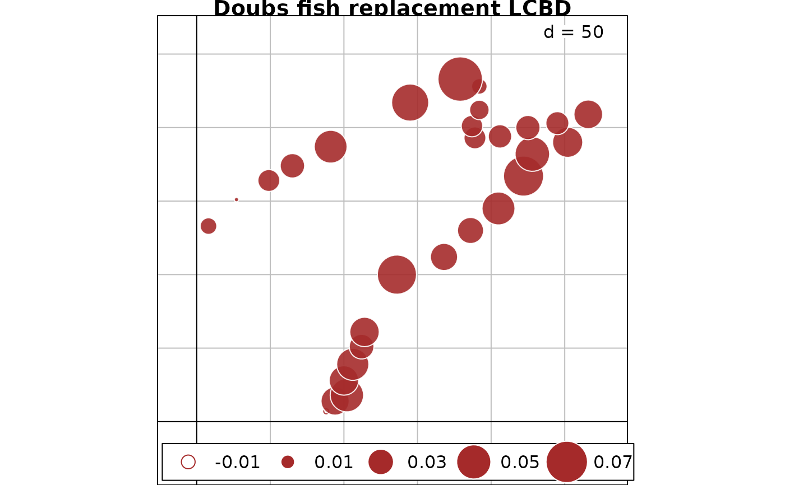

Compute LCBD indices (Legendre & De Cáceres 2013) from a symmetric dissimilarity matrix (D) or from a beta component matrix (Repl, RichDiff or AbDiff, or Nes) (Legendre 2014).
LCBD.comp(D, sqrt.D = TRUE, save.D = FALSE)A list containing the following results:
beta: Total sum of squares and total beta diversity [=
Var(Y)] of the data matrix.
LCBD: Vector of Local
contributions to beta diversity (LCBD) for the sites.
D: The
input dissimilarity matrix, class dist; only if save.D=TRUE
.
Use sqrt.D = TRUE when computing LCBD indices for most of the
replacement and richness/abundance difference indices computed by function
beta.div.comp, as well as for the corresponding D matrices. See
Table S1.4 in Appendix S1 of Legendre (2014) to identify the matrices that
are Euclidean without taking the square root of the individual values. Only
the RichDiffS (for presence-absence data) and AbDiff
abundance data) of the Sørensen group in the Podani family have that
property. In all other cases, use sqrt.D = TRUE.
When computing LCBD from a D matrix, use sqrt = TRUE if the D matrix
is not Euclidean. The Euclidean property can be checked with function
is.euclid of ade4.
BDtotal statistics are comparable among data sets having the same or different numbers of sampling units (n), provided that the sampling units are of the same size or represent the same sampling effort and that BDtotal is computed with the same D index.
Function LCBD.comp produces the same (SStotal, BDtotal, LCBD)
results as function beta.div. Note, however, that the latter
produces other interesting results (p.LCBD, SCBD). Function
LCBD.comp should then only be used to compute LCBD indices from
dissimilarity matrices that cannot be computed by function beta.div,
e.g. genetic D matrices, or from replacement and richness difference
matrices produced by function beta.div.comp. Significance of the
LCBD indices cannot be tested when their calculation starts from a D matrix
because the testing procedure involves permutation of the columns of raw
data.
Legendre, P. 2014. Interpreting the replacement and richness difference components of beta diversity. Global Ecology and Biogeography 23: 1324-1334.
Legendre, P. & M. De Cáceres. 2013. Beta diversity as the variance of community data: dissimilarity coefficients and partitioning. Ecology Letters 16: 951-963.
### Example 1
### Compute the Hellinger distance, then the LCBD indices.
if(require("vegan", quietly = TRUE)){
data(mite)
mite.hel = decostand(mite, "hellinger")
mite.D = dist(mite.hel)
out.mite.D = LCBD.comp(mite.D, sqrt.D=FALSE)
}
### Example 2
if(require("ade4", quietly = TRUE) & require("adegraphics", quietly = TRUE)){
data(doubs)
fish.sp = doubs$fish[-8,] # Fish data; site 8 is removed because no fish were caught
out.comp = beta.div.comp(fish.sp, coef="S", quant=TRUE)
out.fish.D = LCBD.comp(out.comp$D, sqrt.D=TRUE) # out.comp.D is not Euclidean
out.fish.D$beta
out.fish.Repl = LCBD.comp(out.comp$repl, sqrt.D=TRUE) # out.comp$repl is not Euclidean
out.fish.Repl$beta
out.fish.AbDiff = LCBD.comp(out.comp$rich, sqrt.D=FALSE) # out.comp$rich is Euclidean
out.fish.AbDiff$beta
### Plot maps of the LCBD indices
fish.xy = doubs$xy[-8,] # Geographic coordinates; site 8 removed because no fish were caught
# Map of LCBD indices for %difference dissimilarity
s.value(fish.xy, out.fish.D$LCBD, method="size", symbol = "circle",
col = c("white", "brown"), main = "Doubs fish LCBD, %difference D")
# Map of LCBD indices for replacement component of %difference dissimilarity
s.value(fish.xy, out.fish.Repl$LCBD, method="size", symbol = "circle",
col = c("white", "brown"), main = "Doubs fish replacement LCBD")
# Map of LCBD indices for abundance difference component of %difference dissimilarity
s.value(fish.xy, out.fish.AbDiff$LCBD, method="size", symbol = "circle",
col = c("white", "brown"), main = "Doubs fish abundance diff. LCBD")
}
#>
#> Attaching package: ‘adegraphics’
#> The following objects are masked from ‘package:ade4’:
#>
#> kplotsepan.coa, s.arrow, s.class, s.corcircle, s.distri, s.image,
#> s.label, s.logo, s.match, s.traject, s.value, table.value,
#> triangle.class

# \donttest{
if(require("ade4", quietly = TRUE) & require("betapart", quietly = TRUE)){
### Example 3
### This example requires packages \code{"betapart"} and \code{"ade4"} for data.
### For the Baselga-family indices, the same partitioning results are obtained using
### (1) beta.div.comp or (2) beta.pair.abund() of \code{"betapart"} and LCBD.comp()
data(doubs) # Data available in \code{"ade4"}
fish.sp = doubs$fish[-8,]
# Fish data; site 8 is removed because no fish were caught
# We use abundance data in this example, not presence-absence data
# Partition into Baselga-family replacement and nestedness components
# using \code{"beta.div.comp"} with the percentage difference index (aka Bray-Curtis)
out.comp = beta.div.comp(fish.sp, coef="BS", quant=TRUE)
out.comp$part
# Compute the D and component matrices using \code{"beta.pair.abund"}
out3 = beta.pair.abund(fish.sp, index.family = "bray")
summary(out3)
is.euclid(out3$beta.bray) # D matrix out3$beta.bray is not Euclidean
out3.D = LCBD.comp(out3$beta.bray, sqrt.D=TRUE)
out3.D$beta
# Compare BDtotal here to BDtotal in out.comp$part (above)
out3.Repl = LCBD.comp(out3$beta.bray.bal, sqrt.D=TRUE)
out3.Repl$beta
# Compare BDtotal here to RichDiff in out.comp$part (above)
out3.AbDiff = LCBD.comp(out3$beta.bray.gra, sqrt.D=TRUE)
out3.AbDiff$beta
# Compare BDtotal here to RichDiff/Nes in out.comp$part (above)
}
#> SStotal BDtotal
#> 3.1033015 0.1108322
# }